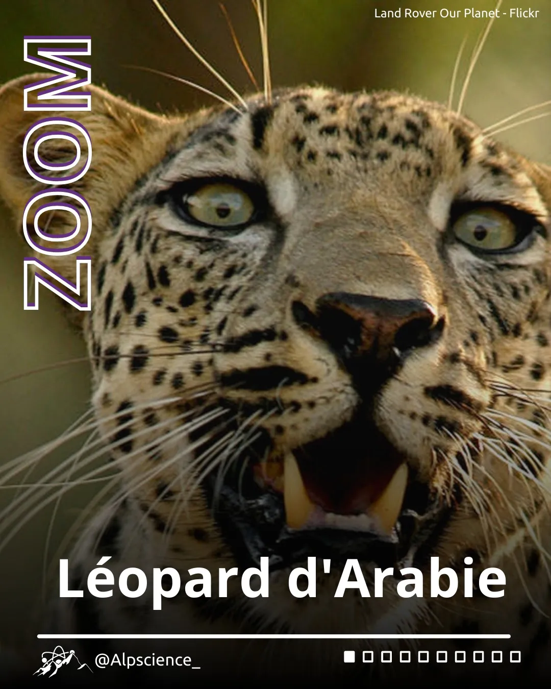
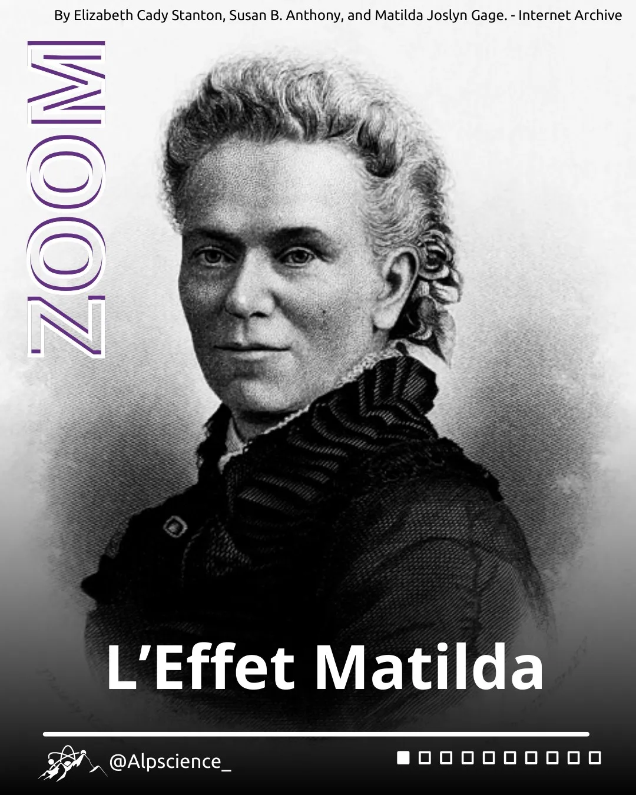
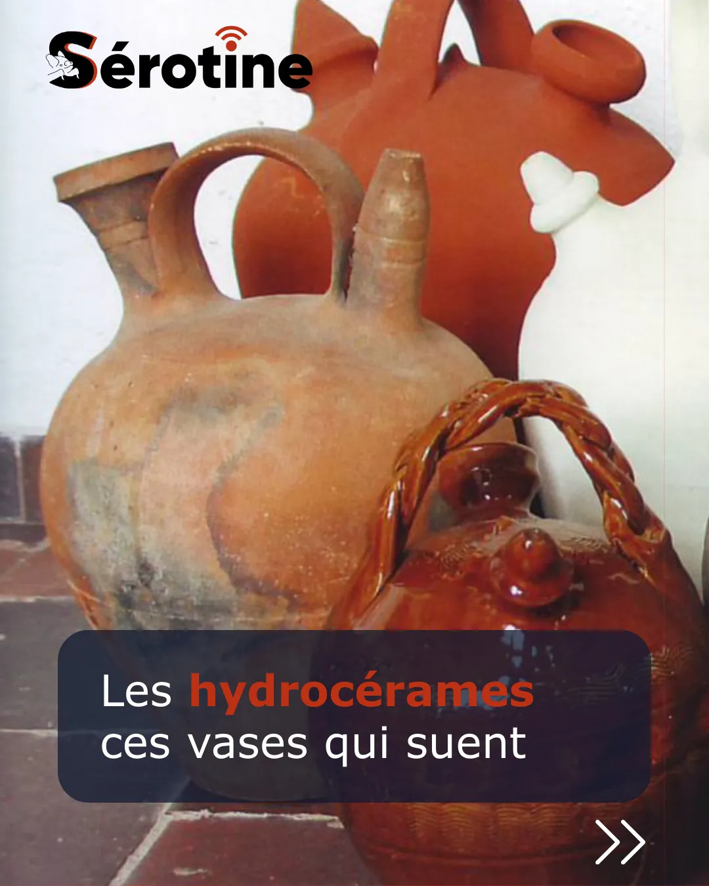

Home / Blog
At the whim of my inspirations.
Blog posts about science, mountains and outreach — written as ideas come.
No matching articles.
February 2026
Biology
Biology
Arabian Leopard
The Arabian leopard (Panthera pardus nimr), also known as the Arabian panther, is a subspecies of leopard. It is distinguished by its coat, which ranges in color from pale yellow to fawn and is dotted with rosettes. Although it is one of the smallest…

February 2026
Sociology
Sociology
The Matilda Effect
The Matilda Effect refers to the recurrent and systemic denial, misappropriation, or downplaying of women’s contributions to scientific research, with their work often being attributed to their male colleagues.

December 2025
Thermodynamics
Thermodynamics
Hydrocerams, the vases that sweat
In many civilisations, clay pots have been used to hold water or other pleasant drinks. These ancient pots have a startling ability: they can cool water, just like refrigerators!
